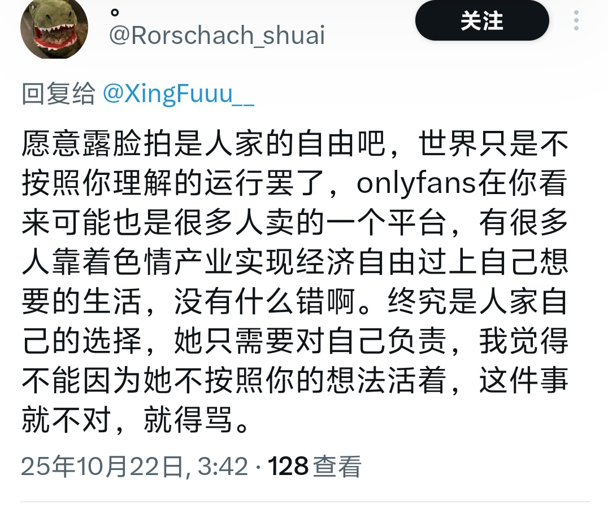

Дистанционизм
@432Ifantrygroup
@XingFuuu__ 我的观点就是：如果出卖一般劳动力比出卖肉体获得的少，那么出卖肉体的存在就有合理性。

芋泥奶绿
@XingFuuu__
我觉得你是那种会劝🐔从良 然后说我愿意听你原生家庭家庭的不幸
当你允许🐔卖的时候你就得知道我的观点你也没资格评论站在道德制高点去评价别人，你是什么好鸟吗？
你要是这么闲学点法律可以吗？不要整天在床上躺着刷手机了 左右脑互搏 杀了人，然后你受害者说他有他的苦衷，不要按照你的想法来 https://t.co/hOxGXumvxo